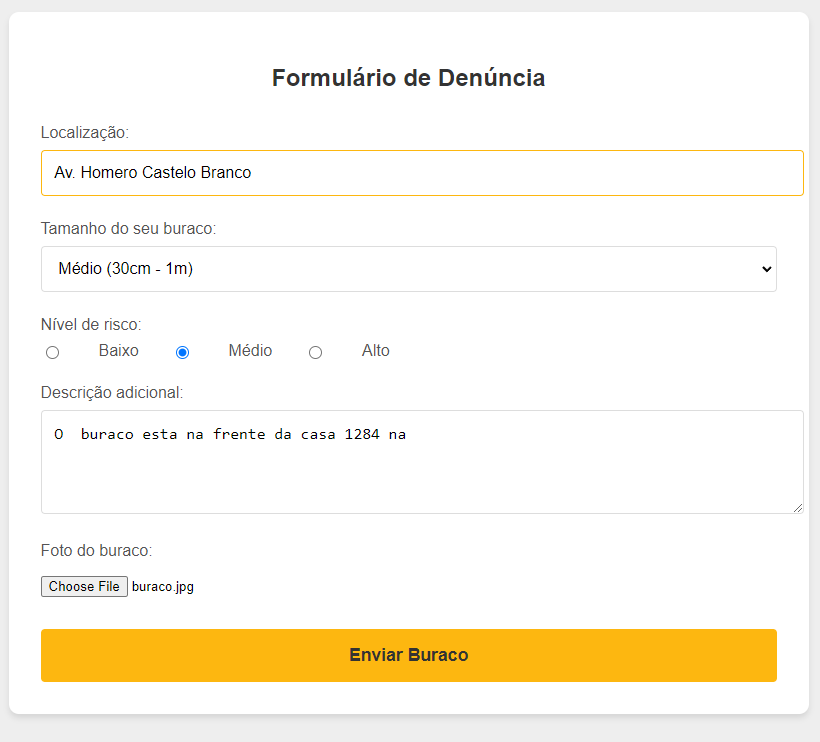

Ajude a melhorar sua cidade!
Denuncie buracos nas ruas e ajude a prefeitura a agir mais rápido.
E como funciona?

Tire uma foto do buraco

Envie a foto através do formulário
A prefeitura será notificada

Com a sua denúncia o buraco será tampado
Um exemplo para ajudar:

Localização: Informe a rua ou avenida onde está o buraco.
Tamanho: Selecione o tamanho aproximado do buraco.
Nível de risco: Escolha entre Baixo, Médio ou Alto, de acordo com o risco que o buraco apresenta aos veículos da rua.
Descrição adicional: Adicione mais detalhes, como números de casas ou estabelecimentos perto do buraco.
Foto do buraco: Faça upload da imagem do buraco para ajudar na denúncia.